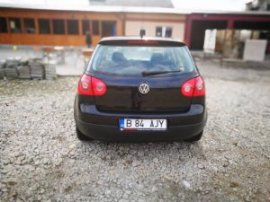
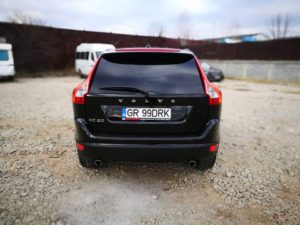
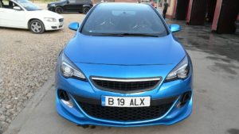

SERVICII
Printre serviciile noastre se enumara urmatoarele :
Echipa Boom Car Service ofera o gama larga de servicii auto la preturi avantajoase si la o calitate ireprosabila. Si pentru a va ajuta sa va decideti, ca suntem service-ul auto de care aveti nevoie, va prezentam cateva din serviciile noastre.
Mecanica auto
BOOM CAR SERVICE este dotat cu echipamente performante de firma, aranjate in flux tehnologic.
In continuare prezentam cateva din serviciile noastre de intretinere si reparatii de mecanica auto:
revizii si intretinere masina: schimb ulei si filtre, fluide de racire. intretinere si reparatii sistem franare: placute frana, discuri de frana, saboti si cilindri de frana, schimb lichid de frana, etc. cu verificarea finala pe stand frana si detectare de jocuri revizii si reparatii elemente de directie: capete de bara, pompa servo, articulatii, etc., cu reglarea in final a directiei pe standul de directie reparare si intretinere elemente de suspensie si articulatii masini: arcuri, amortizoare, flanse, rulmenti sarcina, brate suspensie si antiruliu, pivoti, bucse, planetare, arbore cardanic cu verificarea in final pe stand amortizoare si standul de jocuri intretinere sistem de evacuare: catalizator, sonde lambda, etc. intretinere si reparatii motor: kit curele distributie, transmisie, injectoare, bujii, supapa EGR, turbosuflanta, catalizator, etc. intretinere si reparatii cutie de viteza: kit ambreiaj, volanta, articulatii planetare, etc. intretinere si reparatii sistem de racire: radiatoare apa, ulei, pompa apa, termostat, sonde, etc. In functie de decizia clientului, in activitatea de intretinere si reparatii de mecanica auto, utilizam atat piese de schimb originale cat si piese de schimb de valori medii. Pe langa calitatea lucrarilor executate la service-ul nostru, noi asiguram si garantia lucrarilor. De aceea putem efectua reparatii mecanice prin contracte stabilite de RCA si CASCO cu firmele de asigurari prin decontare directa.
Vopsire auto
BOOM CAR SERVICE ofera solutii complete de vopsire auto: chituri, fullere, lacuri si vopsele. In cadrul Sectiei de Vopsitorie, dotata cu o cabina de vopsit se pot executa operatii de intretinere (polishare, ceruire), vopsire partiala sau totala folosind speciale nemetalizate, metalizate, perlate, vopsele speciale (efect cupru, crom, magic colors), se pot vopsi autoturisme cu vopsele din serii limitate, sau se pot realiza vopsele pentru masini de epoca.
Deoarece o foarte mare importanta o are pregatirea autovehiculului pentru vopsire, aceasta se face in zone speciale, dotate cu filtre si grup de aspiratie, service-ul nostru avand in dotare spatiu de pregatire pentru vopsitorie dotate cu dispozitive de slefuit profesionale cu solutii complete de absorbtie a prafului.
In timpul procesului de pregatire in vederea vopsirii si in timpul vopsirii efective toate autovehiculele sunt izolate integral, indiferent de numarul elementelor vopsite, folosindu-se solutii profesionale de ultima generatie.
Identificarea culorii in vederea revopsirii partiale se efectueaza cu acuratete maxima pentru toata gama de autovehicule, service-ul fiind dotat in acest sens cu un laborator propriu de preparare a vopselelor avand in componenta sa personal calificat pentru identificarea culorilor.
Laboratorul are cateva mii de cartele etalon de culoare realizate prin vopsire reala, care ajuta la identificarea exacta si care acopera toata gama de culori si nuante de vopsea auto existente pe piata.
Profesionalismul angajatilor, dublat de calitatea echipamentului, se reflecta in executarea unor lucrari de vopsitorie de cea mai buna calitate si in cele mai bune conditii.
  Verificari ITP & revizii auto
Cel mai important pentru buna functionare a unei masini este revizia periodica, iar pentru mentinerea autoturismului in parametri optimi de functionare se recomanda efectuarea unei revizii pe an.
Practic orice piesa in miscare are nevoie de ungere, iar proprietatile uleiului respectiv se deterioreaza in timp si de aceea este imposibil ca uleiul cutiei de viteze sa nu aiba de suferit, el trebuind sa fie inlocuit la un termen chiar mai mic decat specifica producatorul.
In functie de tipul sau de vechimea masinii, revizia standard presupune mai multe proceduri:
colectarea uleiului uzat si inlocuirea cu altul nou
schimbarea filtrului de ulei
inlocuirea filtrului de aer
inlocuirea filtrului de habitaclu
inspectia nivelelor lichidelor
verificarea uzurii placutelor de frana
verificarea geometriei rotilor si a unghiului de fuga
Echipa Boom Car Service efectueaza ITP-uri (inspectii tehnice periodice) pentru toate marcile de masini si autovehicule utilitare cu un tonaj de maximum 3,5 tone. Linia de inspectie tehnica periodica (ITP) din cadrul service-ului nostru este acreditata RAR si asigura verificarea tehnica periodica obligatorie a masinii dumneavoastra, in cele mai bune conditii. In cadrul liniei ITP sunt acceptate autovehicule cu inaltimea maxima de 2.70 m si masa maxima de 3.5 tone. Pentru mai multe detalii, va rugam sa intrati pe pagina noastra Verificarea ITP
Pe langa calitatea lucrarilor executate la un service autorizat, urmatorul motiv pentru executarea reviziei intr-un astfel de service este garantia. Atunci cand e cazul unei masini second hand, eventual si cumparata de la un vanzator neautorizat, aceasta poate avea “cosmetizari” care pot ascunde eventuale defectiuni si desigur un istoric necunoscut din punct de vedere al operatiunilor in service. Pentru a achizitiona in siguranta o astfel de masina este recomandata o verificare realizata obligatoriu inaintea tranzactiei la un service autorizat. Aceasta verificare indica exact starea de fapt a masinii si eventualele reparatii ce urmeaza a fi efectuate.
BOOM CAR SERVICE efectueaza urmatoarele operatiuni de verificari si revizii:
Verificari mecanice complete
ITP
Revizii periodice
Consumabile
Filtre
Ulei
Service roti
BOOM CAR SERVICE detine spatii de lucru pentru service roti, dotate cu rampe si aparate de montat/ demontat si echilibrat de ultima generatie. Pe rampa, masina este suspendata in totalitate, pentru ca lucrul in jurul ei sa se desfasoare in deplina siguranta si cat mai fluent, scazand durata reparatiei.
Efectuarea geometriei rotilor implica reglarea diverselor unghiuri ale suspensiei, in conformitate cu valorile prescrise de fabricant.
Reglarea geometriei rotilor permite pozitionarea acestora respectand paralelismul intre axe si cu soseaua
Obstacolele din trafic produc deformarea jantelor, ceea ce conduce la dezechilibrarea rotilor, iar recomandarea in acest caz este sa efectuati operatiunile de indreptari jante si roluit jante periodic, sau odata cu aparitia unor batai, si oricand aveti impresia ca vibreaza volanul. Continuarea rularii cu o astfel de roata va conduce la uzura neuniforma a anvelopei si la scurtarea duratei de viata a acesteia.
Echilibrarea rotilor la BOOM CAR SERVICE asigura uniformizarea masei rotii montate pe masina pe intreaga suprafata a benzii de rulare, in raport cu axa de rotatie
O roata echilibrata face diferenta intre un condus placut sau unul dezastruos, o roata neechilibrata scurtand viata sistemului de rulare, sistemului de directie si a suspensiei.
Pentru buna functionare a franelor autoturismului dumneavoastra si a eficacitatii amortizoarelor, BOOM CAR SERVICE beneficiaza de un stand performant prin care se masoara eficienta sau dezechilibrul acestora.
Servicii oferite de firma noastra:
Diagnosticare sistem franare
Inlocuire anvelope
Montari-demontari anvelope
Indreptari janta aliaj sau tabla
Geometrie roti
Echilibrari roti
Control jante si anvelope
Diagnosticare articulatii si tren rulare
Tinichigerie
La BOOM CAR SERVICE reparatiile la structura metalica si de rezistenta a autovehiculelor se realizeaza intr-un spatiu adecvat si cu o dotare corespunzatoare. Atelierul de tinichigerie dispune de toate mijloacele tehnice necesare indreptarii elementelor de caroserie si interventiei pe structura de rezistenta. Pentru a evita pe cat posibil folosirea sudurii, solutia aleasa este aceea a deformarilor la rece, realizate cu ajutorul echipamentelor speciale.
Numai in situatia in care este strict necesara folosirea sudurii, se utilizeaza aparate de sudura cu argon, care protejeaza caroseria, prin incalziri pe suprafete mici.
Criblura de pe drumurile publice creeaza mari neplaceri conducatorilor auto, producand fisuri la parbrize si faruri. Pentru cei care detin o polita de asigurare auto, inlocuirea unui geam auto indiferent ca este parbriz, luneta sau geamuri laterale va fi facuta fara nici o cheltuiala din buzunarul propriu.
Servicii oferite de firma noastra:
Inlocuire parbrize, lunete
Repararea suprafetelor exterioare
Inlocuirea sau repararea structurii de rezistenta a autoturismelor
Demontari/remontari anexe aferente (bandouri, manere, faruri, etc)